Marmoraria · Tubarão/SC e região
Pedra sob medida, do esquadro à entrega.
Bancadas de cozinha, ilhas, lavabos e banheiros em granito, mármore, quartzo e outros materiais nobres — medidos no local e instalados no lugar certo.
Parcelamento facilitado no cartão
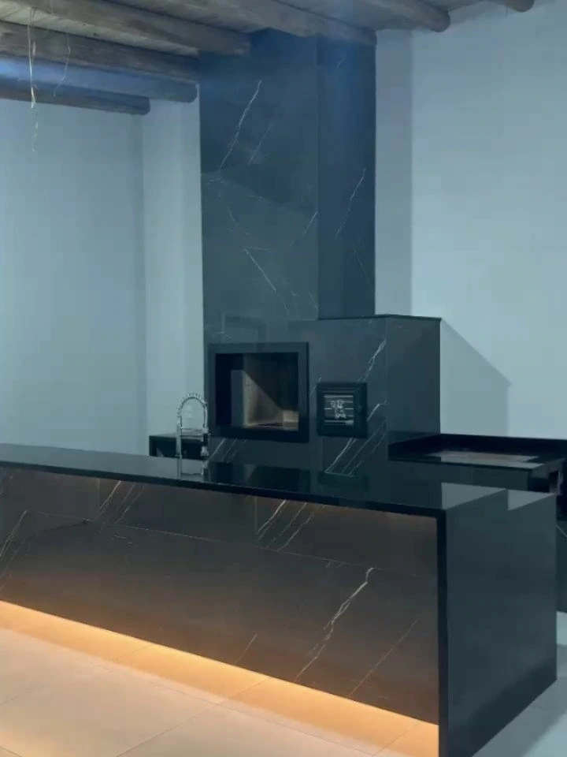
26 anos no mercado
02 Processo
Do esquadro
à entrega.
Cada peça nasce de uma medida. O caminho é o mesmo em toda obra — da visita ao ajuste final.
-
01 / 04
Medição no local
A medida é tirada no próprio ambiente: paredes, cantos, nível e pontos de água e gás. É dela que sai o desenho de cada peça.
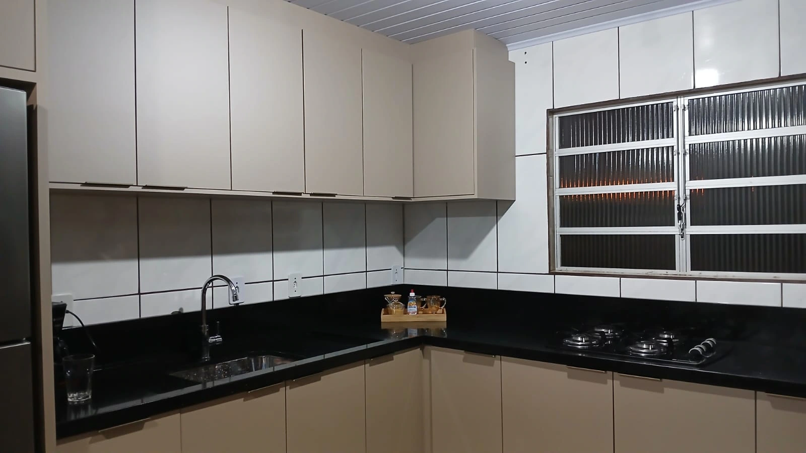
-
02 / 04
Escolha do material
Granito, mármore, quartzo ou outro material nobre: cor, veio e acabamento são definidos junto com você, pensando no uso de cada ambiente.
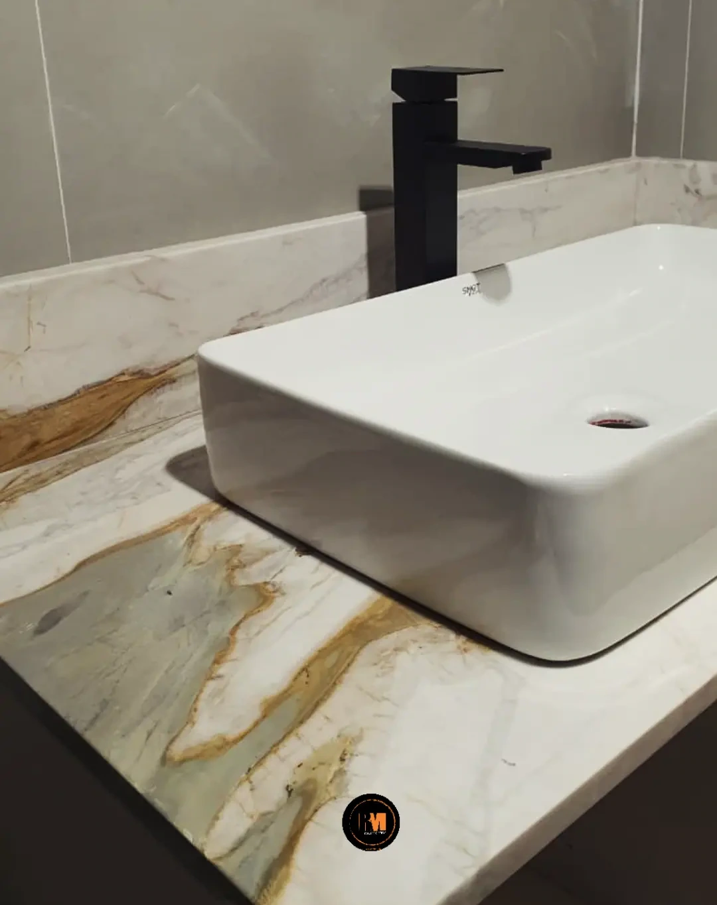
-
03 / 04
Corte e acabamento
A chapa é cortada no desenho da medição, com os recortes de cuba e cooktop e o acabamento das bordas.
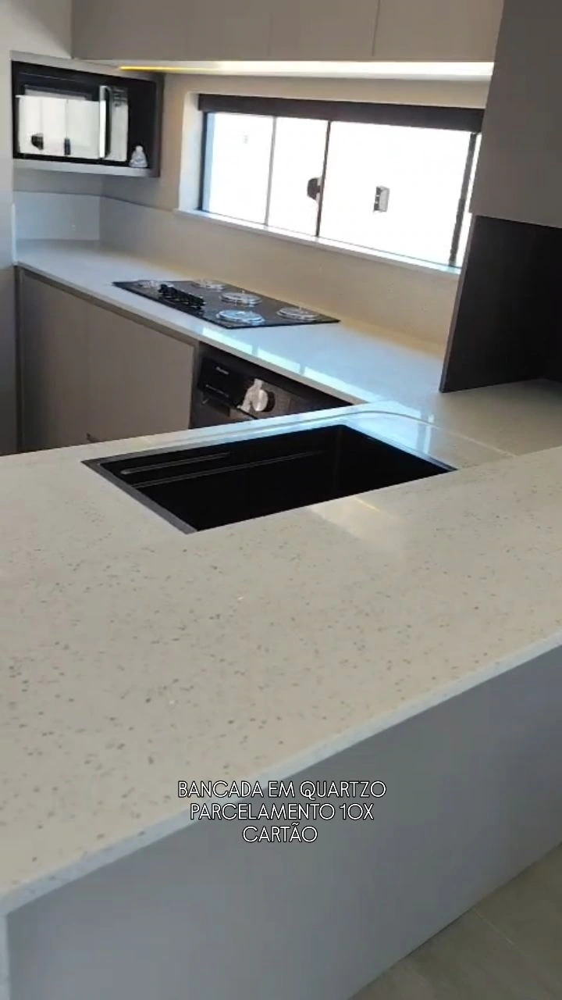
-
04 / 04
Instalação e entrega
A peça é assentada, nivelada e conferida no esquadro antes da entrega. O ambiente fica pronto para uso.
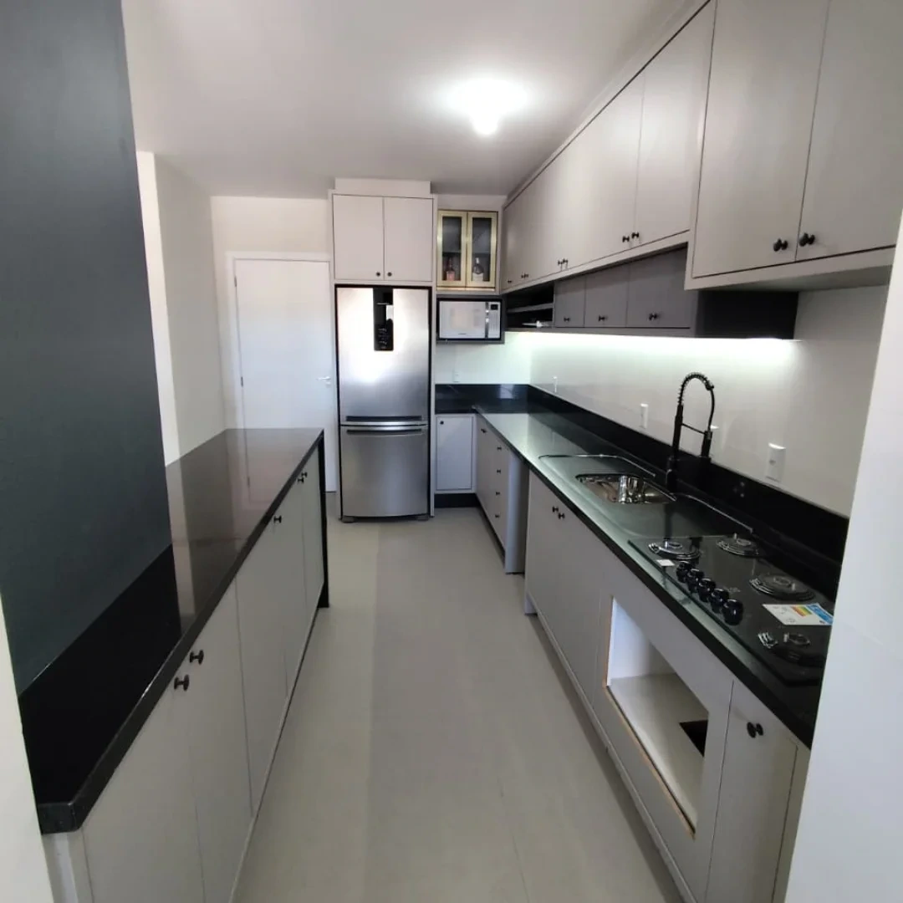
03 Entregas
Peças instaladas, ambiente por ambiente.
Alguns trabalhos publicados pela RM no Instagram. Filtre pelo ambiente que você quer fazer.
-
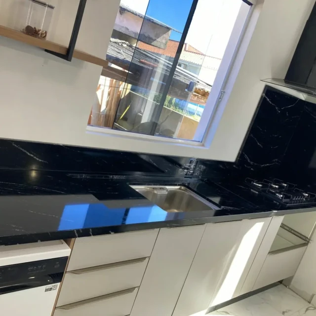
E-01 Cozinha -
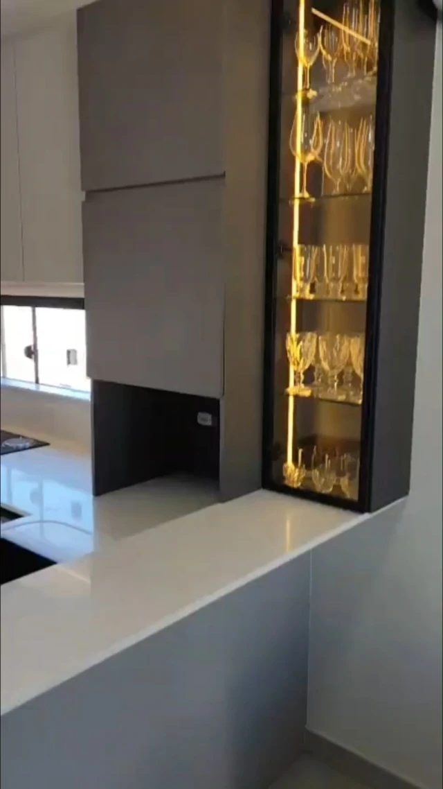
E-02 Cozinha -
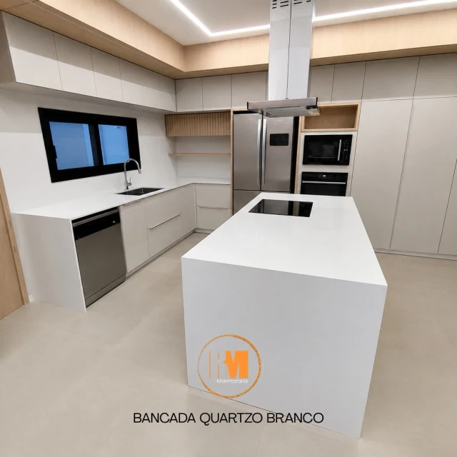
E-03 Ilha -
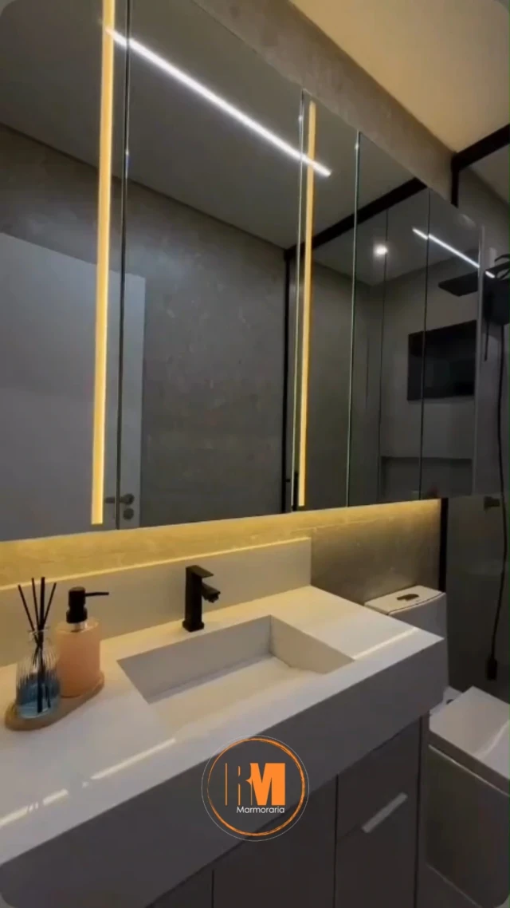
E-04 Lavabo -
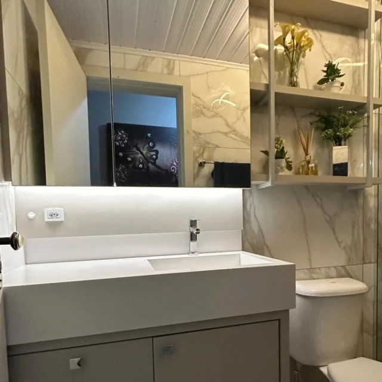
E-05 Banheiro -
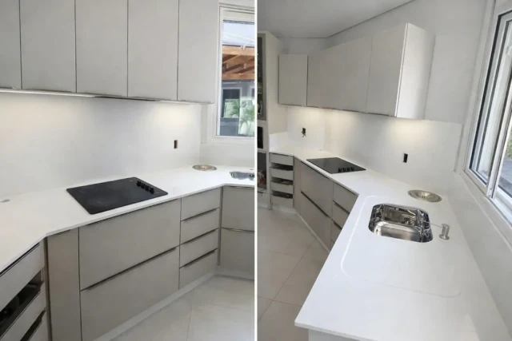
E-06 Cozinha -
E-07 Ilha gourmet -
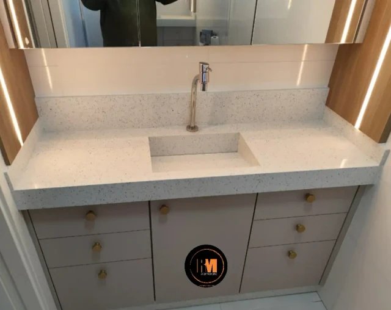
E-08 Lavabo -
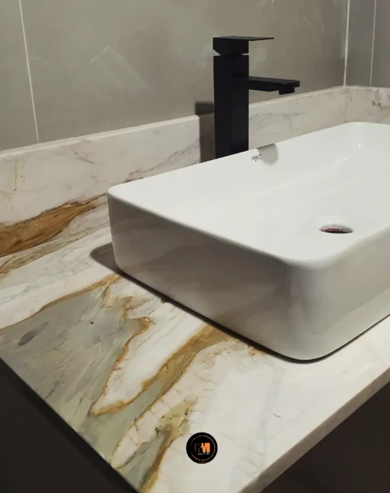
E-09 Banheiro
04 Materiais
Granitos, mármores, quartzos e materiais nobres
Cada ambiente pede uma pedra. A RM trabalha com materiais nobres e define junto com você o acabamento de bordas e recortes.
- M-01Granitos
- M-02Mármores
- M-03Quartzos
- M-04Materiais nobres
Disponibilidade de cada material, cor e acabamento confirmada no orçamento.
05 Orçamento
Tubarão
e região.
Conte o ambiente, mande uma foto do espaço e diga qual material tem em mente. O orçamento começa pelo WhatsApp.
- Mercado
- 26 anos
- Atendimento
- Tubarão e região
- Pagamento
- Parcelamento facilitado no cartão